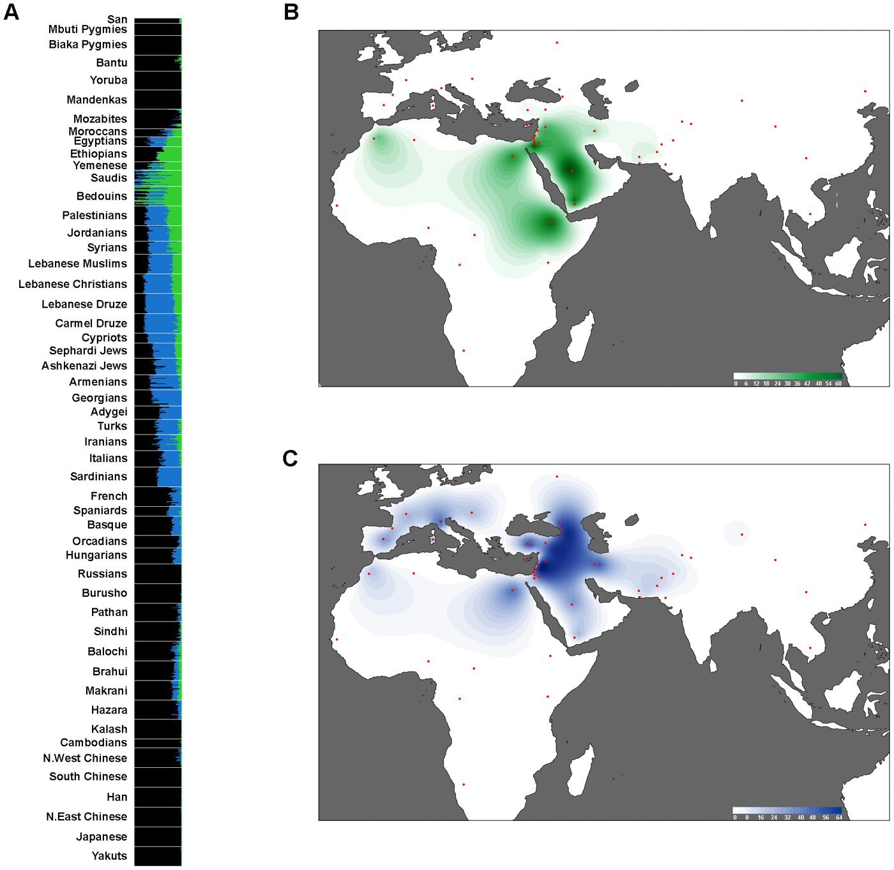

„Araber“ ist ein Wort für eine Sprache und Kultur, nicht für eine Abstammung. Die Palästinenser sprechen Arabisch und verstehen sich auch selbst als Teil der arabischen Welt – ihre Vorfahren aber lebten zum weit überwiegenden Teil schon in der Bronzezeit in der Levante. Alte DNA zeigt: Die Bevölkerung des Landes wurde nie ausgetauscht – weder durch die Philister noch durch die Römer noch durch die arabische Eroberung. Diese brachte Sprache und Religion und einen kleineren, messbaren Zustrom von Menschen.
„Araber“: ein Wort für Sprache, nicht für Abstammung
Vor der arabischen Eroberung 634–640 sprachen die Menschen in Palästina Aramäisch und Griechisch und waren überwiegend Christen, Juden und Samaritaner. In den folgenden Jahrhunderten setzte sich das Arabische als Alltagssprache durch, und ein großer Teil der Bevölkerung trat allmählich zum Islam über. Archäologisch zeigt sich Siedlungskontinuität: Die Dörfer wurden weiterbewohnt, nicht neu besiedelt (Gideon Avni, The Byzantine–Islamic Transition in Palestine, Oxford 2014). Auch die christlichen Gemeinden übernahmen das Arabische, ohne ihre Religion zu wechseln. „Arabisch“ wurde also vor allem, wer Arabisch sprach.
Die Palästinensische Nationalcharta von 1968 spricht vom „arabischen palästinensischen Volk“, das „ein untrennbarer Teil der arabischen Nation“ sei (Art. 1), und definiert Palästinenser als „jene arabischen Staatsangehörigen, die bis 1947 gewöhnlich in Palästina lebten“ (Art. 5; Wortlaut). Arabisch und palästinensisch zu sein ist kein Widerspruch: Das eine beschreibt Sprache und Kultur, das andere ein Volk mit einer Heimat. Problematisch wird das Wort erst, wenn es benutzt wird, um zu behaupten, die Palästinenser seien Fremde im eigenen Land.
Wie das Etikett benutzt wurdeVom „nichtjüdischen Bevölkerungsteil“ zu „Araber, die woanders leben könnten“
Ben-Gurion selbst schrieb in seinem Aufsatz „Zur Herkunft der Fellachen“ (Luach Achiezer, New York 1917, S. 118–127), die palästinensischen Bauern stammten großenteils von der antiken jüdischen Landbevölkerung ab; es gebe „keinen Zweifel, dass viel jüdisches Blut in ihren Adern fließt“ (zitiert nach Judea Pearl, Middle East Quarterly 2008). Er verfolgte damit damals eine politische Absicht – die These widerspricht aber dem späteren Bild der „eingewanderten Araber“.
Balfour-Erklärung: Die Bevölkerungsmehrheit – rund neun von zehn Einwohnern – erscheint nicht mit Namen, sondern nur als „bestehende nichtjüdische Gemeinschaften in Palästina“, deren „bürgerliche und religiöse Rechte“ gewahrt werden sollen; von politischen Rechten ist keine Rede (Wortlaut).
Golda Meir, Ministerpräsidentin, in der Sunday Times vom 15.6.1969: „Es gab keine Palästinenser.“ (zitiert nach der verbreiteten Wiedergabe; die Original-Zeitungsseite konnte nicht eingesehen werden). → Behauptung Nr. 2 auf der Hasbara-Seite
Joan Peters, From Time Immemorial: Die Araber Palästinas seien großenteils erst mit dem Zionismus eingewandert. Fachhistoriker wie Yehoshua Porath und Norman Finkelstein wiesen nach, dass die Zahlen des Buches manipuliert waren. → Behauptung Nr. 28
Das Muster: Wer die Palästinenser nur „Araber“ nennt, legt nahe, sie gehörten in „die arabischen Länder“ und nicht in ihr eigenes. Die Genetik widerlegt diese Unterstellung – mit Befunden, die im Folgenden Studie für Studie belegt sind.
Wie man die Diagramme liest
- 1Alte DNA (aDNA): Erbgut aus Knochen, meist aus dem Felsenbein des Schädels. Damit lässt sich direkt vergleichen, wer vor 4.000 Jahren lebte und wer heute lebt.
- 2Genom: das gesamte Erbgut eines Menschen. Jeder erbt es je zur Hälfte von Mutter und Vater – nach zehn Generationen stammt es von über tausend Vorfahren.
- 3Grundquelle: eine sehr alte Bevölkerung, die als Bezugspunkt dient – z. B. die ersten Bauern der Levante vor rund 10.000 Jahren („Levant_N“) oder des Zagros-Gebirges im Iran („Iran_N“). Die Farben in den Diagrammen sind solche Grundquellen, keine heutigen Völker.
- 4Beimischung („Admixture“): der Anteil einer später hinzugekommenen Herkunft. Eine Beimischung von 7 % heißt: Etwa 7 % des Erbguts stammen im Mittel aus dieser Quelle.
- 5qpAdm: ein Rechenverfahren, das prüft, ob sich eine Gruppe als Mischung bestimmter Quellen beschreiben lässt, und die Anteile mit Fehlerspanne angibt (z. B. 93 % ± 1,6).
- 6ADMIXTURE-Balken: jeder Mensch eine senkrechte Linie, die Farben sind statistisch gefundene Komponenten. Eine Komponente ist ein Muster, kein Herkunftsnachweis.
- 7Haplogruppe des Y-Chromosoms: eine Familie von Vaterlinien, die vom Vater auf den Sohn fast unverändert weitergegeben wird. Sie zeigt nur einen einzigen Vorfahrenstrang von Tausenden.
- 8Platzhalter: Wo eine Quelle fehlt, nehmen Forscher einen nahen Stellvertreter – „Mota“ etwa ist ein 4.500 Jahre alter Mann aus Äthiopien, der für „Ostafrika“ steht. Prozentwerte sind Modellwerte, keine Stammbaum-Anteile.
Wer die „Kanaaniter“ genetisch waren
Die bisher größte Studie zur Bronzezeit der südlichen Levante (Agranat-Tamir u. a., Cell 2020, Volltext) hat 73 Genome aus Megiddo, Hazor, Yehud, Abel Beth Maacah und Baq'ah ausgewertet. Ergebnis: Die Menschen, die in den Quellen „Kanaaniter“ heißen, ähnelten einander stärker als allen anderen – und waren selbst schon eine Mischung, zu 48 bis 57 % aus den ersten Bauern der Levante und zum Rest aus Zuwanderern aus dem Zagros und Kaukasus. Für heutige arabischsprachige und jüdische Gruppen gilt nach der Studie: Sie sind „vereinbar mit mehr als 50 % nahöstlicher Abstammung“. Das ist eine Untergrenze; einzelne Werte für Palästinenser nennt der Text nicht.
Am direktesten belegt ist die Kontinuität für den Libanon. Dort konnte man 3.700 Jahre alte Genome aus Sidon mit heutigen Libanesen vergleichen:
Modell mit 3.700 Jahre alten Genomen
Eigene Darstellung nach Haber u. a. 2017, American Journal of Human Genetics 101/2, Abb. 3C. Die Studie betrifft Libanesen; für Palästinenser gibt es keine vergleichbare Zahl.

Eine spätere Studie aus Beirut (Haber u. a. 2020) zeigt dazu kleinere Zuströme in der Eisenzeit (12–37 % aus Anatolien/Südosteuropa), in hellenistischer Zeit (6–12 % aus Süd- und Zentralasien) und in osmanischer Zeit (Kaukasus) – von den Römern blieb kaum eine Spur. Kein Zustrom hat die Bevölkerung ersetzt.
Was über die Palästinenser selbst belegt ist
Es gibt keine veröffentlichte Zahl „x % der Palästinenser stammen von den Kanaanitern ab“. Keine der großen Studien hat Palästinenser neu beprobt; sie laufen als Vergleichsgruppe aus älteren Datensätzen mit. Wer eine solche Prozentzahl nennt, zitiert falsch. Belegt ist das Folgende.
Ganzes ErbgutDer Grundstock ist levantinisch-westasiatisch
Negev
Eigene Darstellung nach Srigyan u. a. 2022, Communications Biology 5:554, Tabelle 2 (qpAdm-Modell; Fehler je Anteil etwa ±1–4 Prozentpunkte). Lesehilfe: Die Farben sind uralte Grundquellen, keine Völker. Das Modell misst nicht „Kanaaniter“ oder „Araber“ – beide bestehen selbst aus diesen Grundquellen. Es zeigt aber deutlich: Der Grundstock aller Gruppen ist westasiatisch, der Afrika-Anteil der Palästinenser liegt bei rund 6–7 %.

Was dazukamEin messbarer Zustrom aus Arabien und Afrika
Die Studien zeigen bei Palästinensern – wie bei Jordaniern und Syrern – einen Zustrom von der Arabischen Halbinsel und aus Afrika, der bei libanesischen Christen und Drusen kaum vorkommt:
- 1Haber u. a. 2013: Eine Komponente, die in Arabien und Ostafrika vorherrscht, macht bei Palästinensern, Jordaniern und Syrern rund 25 % aus, bei anderen Levantinern 4–20 %. Die genetische Struktur der Levante folgt heute der Religion: Mit dem Islam öffneten sich neue Heiratskreise.
- 2Srigyan u. a. 2022 und Almarri u. a. 2021: Ostafrika-Anteil bei Palästinensern rund 6–7 %, bei Drusen nahe null; der afrikanische Zustrom fällt überwiegend in die letzten 2.000, meist 500 bis 1.000 Jahre (Almarri 2021).
- 3Direkter Nachweis arabischer Zuwanderer: Zwei Tote aus der Umayyadenzeit (665–768) in Südsyrien gleichen genetisch heutigen Saudis und Beduinen. Wie groß dieser Zustrom insgesamt war, lässt die Studie ausdrücklich offen (Srigyan 2022).

Zusammengefasst: Je nach Methode stammen einige bis etwa ein Viertel des Erbguts der Palästinenser aus Zuströmen der letzten zwei Jahrtausende, vor allem aus Arabien und Afrika. Das ist eine Beimischung, kein Austausch. Der weit überwiegende Teil ist das Erbe der Menschen, die seit Jahrtausenden in der Levante leben.
Sie gaben dem Land den Namen – und gingen in seiner Bevölkerung auf
Die Philister kamen um 1200 v. Chr. über das Meer an die Südküste; von ihnen leitet sich der Name „Palästina“ ab (→ Epochen). Gräber aus Aschkelon zeigen, was genetisch geschah:
Eigene Darstellung nach Feldman u. a. 2019, Science Advances 5:eaax0061, Abb. 3B und Zusammenfassung (Aschkelon, 10 Personen). Der Balken der frühen Eisenzeit zeigt den Höchstwert; die Spanne reicht je nach Vergleichsquelle von 15,7 ± 9,1 % (Steppe) bis 43,1 ± 19,2 % (Kreta).
Die Zuwanderung war also real und anfangs deutlich – innerhalb von höchstens zwei Jahrhunderten war ihr Erbe aber in der einheimischen Bevölkerung aufgegangen (Feldman u. a. 2019). Zu heutigen Palästinensern machen die Autoren keine Aussage. Ein ähnliches Signal aus Anatolien und Südosteuropa findet sich zur selben Zeit auch in Beirut – es betrifft die ganze Küste, nicht nur die Philister.
Palästinenser und Juden: verwandter, als beide Seiten oft hören wollen
Nach Nebel u. a. 2000/2001: Anteil der Y-Chromosomen, die zum selben, beiden Gruppen gemeinsamen Pool gehören. Nur Vaterlinie.
Schon die Y-Chromosom-Studien der Jahre 2000/2001 fanden einen großen gemeinsamen Pool; der häufigste arabische Y-Haplotyp ist eng mit dem sogenannten „Cohen-Modal-Haplotyp“ verwandt (Nebel 2000, Nebel 2001). Und Agranat-Tamir 2020 findet für arabischsprachige und jüdische Gruppen gleichermaßen mehr als 50 % nahöstliche Abstammung; bei aschkenasischen Juden kommt ein großer europäischer Anteil hinzu.
Eigene Darstellung nach Nebel u. a. 2001, American Journal of Human Genetics 69/5, Tabelle 1: Anteil der Männer mit der Y-Haplogruppe „Eu 10“ (Vaterlinie). Die Autoren vermuten, dass ein Teil davon „in den letzten zwei Jahrtausenden“ von der Arabischen Halbinsel kam – eine Hypothese, keine Messung.
Kein Rechtstitel – für niemanden
Die Autoren der wichtigsten Studie betonen selbst, ihre Methode könne „nicht für sich allein beweisen“, dass Gruppenidentitäten der Vergangenheit mit Genetik zusammenhingen (Agranat-Tamir 2020). Das Recht der Palästinenser auf ihr Land, auf Rückkehr und Selbstbestimmung folgt aus dem Völkerrecht und daraus, dass sie dort seit Generationen leben – nicht aus Prozentzahlen. Es gälte genauso, wenn ein Vorfahre aus Arabien, Ägypten oder dem Kaukasus käme. Diese Seite widerlegt mit der Genetik eine Unterstellung; sie begründet damit keinen Anspruch. → Die Juden im Land
- „Die Palästinenser sind eingewanderte Araber“ – widerlegt durch die Kontinuität seit der Bronzezeit.
- „Die Juden sind Europäer, nur die Palästinenser sind echte Kanaaniter“ – ebenfalls falsch: Jüdische Gruppen haben einen großen nahöstlichen Anteil.
- Ein Fachartikel über Palästinenser (Arnaiz-Villena u. a. 2001) wurde vom Verlag zurückgezogen; er wird hier deshalb nicht als Beleg verwendet.
- Für Palästina selbst fehlen alte Genome aus byzantinischer und islamischer Zeit (etwa 200–1500 n. Chr.); die Lücke wird teils mit Daten aus dem Libanon und Syrien überbrückt.
- Neuere Studien, die Palästinenser gezielt neu beproben, und Studien zur Mutterlinie (mtDNA) wurden für die Jahre 2014–2026 nicht gefunden.
- Die Prozentwerte hängen vom Modell ab: Für dieselben Palästinenser-Daten ergibt ein Modell 53,5 % jungsteinzeitliche Levante, ein anderes 40 % (das zweite passt allerdings schlecht).
- Negev-Beduinen sind eine eigene Gruppe mit deutlich stärkerem Bezug zur Arabischen Halbinsel.
Studien (alle begutachtet): Agranat-Tamir u. a., „The Genomic History of the Bronze Age Southern Levant“, Cell 181/5 (2020) → · Haber u. a., „Continuity and Admixture in the Last Five Millennia of Levantine History“, AJHG 101/2 (2017) → · Haber u. a., „A Genetic History of the Near East from an aDNA Time Course“, AJHG 107/1 (2020) → · Haber u. a., „Genome-Wide Diversity in the Levant Reveals Recent Structuring by Culture“, PLoS Genetics 9/2 (2013) → · Feldman u. a., „Ancient DNA sheds light on the genetic origins of early Iron Age Philistines“, Science Advances 5 (2019) → · Nebel u. a., Human Genetics 107/6 (2000) → und AJHG 69/5 (2001) → · Srigyan u. a., Communications Biology 5:554 (2022) → · Almarri u. a., „The genomic history of the Middle East“, Cell 184/18 (2021) →. Geschichte: Gideon Avni, The Byzantine–Islamic Transition in Palestine (Oxford 2014); Palästinensische Nationalcharta 1968 (Avalon Project); Balfour-Erklärung (Avalon Project). Stand: 14. November 2026.